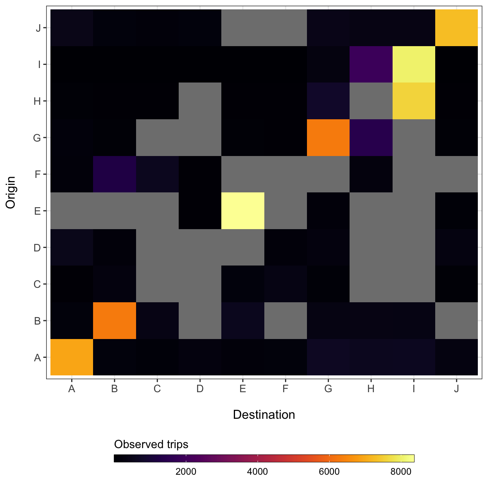
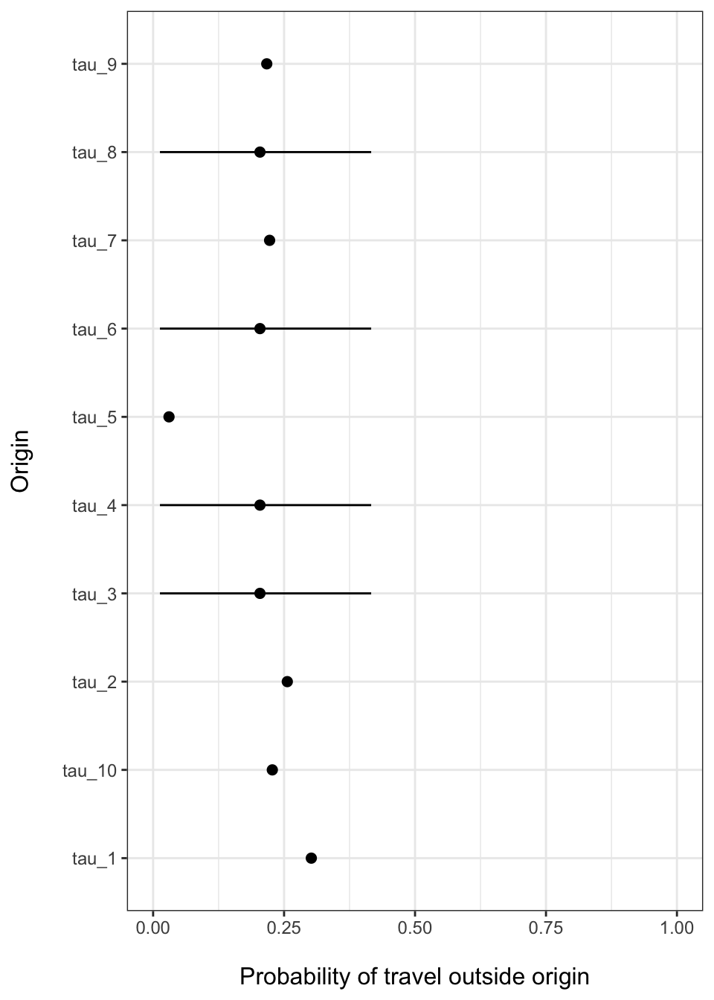

Fitting and simulating a full mobility model
Source:vignettes/V5_mobility_model.Rmd
V5_mobility_model.RmdSo, what do we mean by “mobility” model? The mobility model estimated by this package is different from using just a gravity model in that it uses a flexible departure-diffusion model framework that estimates diagonal and off-diagonal elements of the mobility matrix (\(\hat{M}\)) separately and combines both models using conditional probability rules. This is achieved by combining models that estimate: 1) the probabilty of travel outside the origin location \(i\) (\(\tau_i\))—the departure process, and 2) the distribution of travel from the origin location \(i\) to all \(j\) destinations (\(\pi_{ij}\))—the diffusion process.
A common problem with mobility data, regardless of the source, is missing observations. This occurs when some \(i \rightarrow j\) routes in the mobility data matrix were not observed during the time interval of data collection, or in the case of travel survey data, questions about travel may be collected for only a few locations. However, the role of a mobility matrix in other models (e.g. disease transmission models) is often to supply connectivity or travel volume for all possible routes of travel among locations. Therefore, the model fitting and simulation functions in this package are designed to help estimate \(\tau_i\) and \(\pi_{ij}\) for missing locations and allow extrapolation to other spatial scales.
The following vignette will use simulated data to give an example of how a full mobility model can be estimated and simulated from incomplete data. Both models described below can be fitted to data independently using the fit_prob_travel() and fit_gravity() functions. The fit_mobility() function is a wrapper that combines these models to estimate both diagonal and off-diagonal elements of the mobility matrix. The check_mobility() and sim_mobility() functions then facilitate model validation and stochastic simulation of the fitted mobility model.
Build data matrices
Before we can fit a mobility model, we must build data matrices from the longform travel data. When starting with this data form, the utility functions get_mob_matrix(), get_distance_matrix(), and get_pop_vec() can be used to generate data matrices representing travel among locations (\(M\)), along with distances (\(D\)) and population sizes (\(N\)). These data structures are used by the modeling and simulation functions. Here we use pre-built matrices from simulated data in the mobiliy_matrices() data object.
M <- mobility_matrices$M D <- mobility_matrices$D N <- mobility_matrices$N
By design, we have added additional stochasticity around trip counts in the movement matrix (\(M\)) and randomly sampled 70% of observed routes to simulate missing observations, which are shown as grey cells in the plot below.
ggplot(data=melt(M)) + geom_tile(aes(x=factor(destination), y=factor(origin), fill=value)) + xlab('Destination') + ylab("Origin") + theme_bw() + theme(axis.text.x=element_text(size=10), axis.text.y=element_text(size=10), axis.title.x=element_text(size=12, margin = margin(t = 15)), axis.title.y=element_text(size=12, margin = margin(r = 15)), legend.position='bottom') + viridis::scale_fill_viridis(option='inferno', direction=1) + guides(fill=guide_colorbar(title='Observed trips', title.position='top', label.theme=element_text(size=9), barwidth=20, barheight=0.5, frame.colour='black', ticks=TRUE))

Estimate probability of travel outside each origin location
To estimate the probability of traveling outside the origin location \(i\), the fit_mobility() function uses a Beta-Binomial model with hierarchical structure to infer travel probability in unobserved locations. \[
y_i \sim \text{Binom}(\tau_i, \sum_{j} M_{ij})
\] The random variable \(y_i\) is the observed number of trips that leave origin \(i\) within the time interval. Binomial parameters \(\tau_i\) and \(\sum_{j} M_{ij}\) are the success probability and total number of observed trips originating from \(i\) respectively. In the absence of a linear predictor containing covariates, the conjugate prior distribution for a Binomial likelihood is the Beta distribution (a random variable between 0 and 1). Therefore, success probabilities \(\tau_i\) are assumed to be independent samples drawn from a Beta distributed prior with shape and rate parameters \(\alpha\) and \(\beta\) (Gelman et al. 2003). \[
\begin{aligned}
\tau_i &\sim \text{Beta}(\alpha, \beta) \\
\tau_\text{pop} &\sim \text{Beta}(\bar{\alpha}, \bar{\beta})
\end{aligned}
\] The hierarchical structure comes from estimating \(\alpha\) and \(\beta\) as population-level hyper-priors for the origin-level probabilities \(\tau_i\), where \(\tau_\text{pop}\) captures the overall population-level mean with a distribution denoted as \(\text{Beta}(\bar{\alpha}, \bar{\beta})\). \[
\begin{aligned}
\alpha &\sim \text{Gamma}(1,0.1) \\
\beta &\sim \text{Gamma}(1,0.1)
\end{aligned}
\]
This structure allows origin locations to have probabilities \(\tau_i\) which are driven by data in each location and all unobserved locations regress to the population mean \(\tau_\text{pop}\).
total <- rowSums(M, na.rm=TRUE) prob_trav <- summarize_mobility( fit_prob_travel(travel=total-diag(M), total=total) ) #> These missing locations will inherit population mean: #> C F I J #> Compiling model graph #> Resolving undeclared variables #> Allocating nodes #> Graph information: #> Observed stochastic nodes: 6 #> Unobserved stochastic nodes: 9 #> Total graph size: 26 #> #> Initializing model #> #> NOTE: Stopping adaptation
ggplot(data=prob_trav) + geom_point(aes(x=Mean, y=rownames(prob_trav)), size=2) + ggstance::geom_linerangeh(aes(y=rownames(prob_trav), xmin=HPD2.5, xmax=HPD97.5)) + xlim(0,1) + xlab('Probability of travel outside origin') + ylab('Origin') + theme_bw() + theme(axis.text.x=element_text(size=9), axis.text.y=element_text(size=9), axis.title.x=element_text(size=12, margin = margin(t = 15)), axis.title.y=element_text(size=12, margin = margin(r = 15)), legend.position='right')

Estimate probability of travel between origins and destinations using gravity model
The fit_mobility() function estimates gravity model parameters using the distance among locations (\(D\)) and population sizes (\(N\)) as covariates in the gravity equation, which is fitted to the off-diagonal elements of the movement matrix (\(M\)). The model formula uses a Poisson likelihood link function with the following specification: \[
\begin{aligned}
m_{ij} &\sim \text{Poisson}\big(\pi_{ij}N_{i}\big)\\
\pi_{ij} &= c_{ij}/\sum_{\forall j}c_{ij} \\
c_{ij} &= \theta \Bigg(
\frac{
N_{i}^{\omega_1} N_{j}^{\omega_2}
}{
d_{ij}
} \Bigg)
\end{aligned}
\] Gravity model parameters are fit through normalized connectivity values (\(\pi_{ij}\)) that scale the Poission likelihood so that it is proportional to the observed trip counts along each \(i \rightarrow j\) route (\(m_{ij}\)). The exponential parameters \(\omega_1\) and \(\omega_2\) are weights that modify the contribution of origin and destination population sizes, and \(\theta\) is a proportionality constant. The denominator of the gravity model, \(d_{ij}^\gamma\), serves as the dispersal kernel function. The fitting function estimates the posterior distribution of model parameters using Bayesian MCMC inference.
Combining models to estimate full mobility matrix
The two models described above can now be combined into a departure-diffusion model to give the full mobility matrix \(\hat{M}\). Here, \(\tau_i\) (the probability of leaving origin \(i\)) is the departure process and \(\pi_{ij}\) (the probability of going from \(i\) to \(j\)) is the diffusion process. The values of \(\pi_{ij}\) sum to unity along each row, but the diagonal is missing, indicating that this is a relative quantity. That is to say, \(\pi_{ij}\) gives the probability of going from \(i\) to \(j\) given that travel outside origin \(i\) occurs. Therefore, we can use basic conditional probability rules (Blitzstein and Hwang 2014) to define the travel routes in the off-diagonals.
\[ \Pr( \text{depart}_i, \text{diffuse}_{i \rightarrow j}) = \Pr( \text{diffuse}_{i \rightarrow j} \mid \text{depart}_i ) \Pr(\text{depart}_i ) = \pi_{ij} \tau_i. \] and \[ \Pr( \neg \text{depart}_i ) = 1 - \tau_i. \]
Now each row of the estimated mobility matrix \(\hat{M}\) sum to 1 including the diagonal to give the absolute probability of travel within origins and among origins and destinations.
Fitting a mobility model to data
The parameters \(\tau_i\) and \(\pi_{ij}\) can be estimated together using the fit_mobility() function:
mod <- summarize_mobility( fit_mobility(M, D, N), ac_lags=5 ) #> Estimating probability of travel outside origin... #> These missing locations will inherit population mean: #> C F I J #> Compiling model graph #> Resolving undeclared variables #> Allocating nodes #> Graph information: #> Observed stochastic nodes: 6 #> Unobserved stochastic nodes: 9 #> Total graph size: 26 #> #> Initializing model #> #> NOTE: Stopping adaptation #> Complete. #> Estimating travel among destinations with gravity model... #> ::Fitting gravity model for 10 origins and 10 destinations:: #> Using uniformative priors #> Compiling model graph #> Resolving undeclared variables #> Allocating nodes #> Graph information: #> Observed stochastic nodes: 74 #> Unobserved stochastic nodes: 30 #> Total graph size: 1196 #> #> Initializing model #> #> NOTE: Stopping adaptation #> Complete. mod #> Mean SD HPD2.5 HPD97.5 Rhat SSeff AC5 #> gamma 1.72489487 0.012422712 1.698607800 1.74713269 1.00 1315 0.01 #> omega_1 1.39461262 0.703556865 0.441366719 2.73865108 1.02 402 0.20 #> omega_2 0.03084936 0.015540844 0.003483752 0.05982786 1.01 1089 0.00 #> theta 1.08416327 0.725169954 0.036684345 2.56151086 1.00 643 0.05 #> tau_1 0.53172858 0.005142319 0.522063084 0.54152979 1.01 1158 -0.03 #> tau_2 0.03894951 0.002012992 0.034969108 0.04294950 1.00 1134 0.03 #> tau_3 0.36100175 0.207675577 0.010456054 0.76128455 1.00 2125 -0.01 #> tau_4 0.70125172 0.005319987 0.690032741 0.71116931 1.00 1435 -0.01 #> tau_5 0.17758021 0.003770436 0.170570475 0.18539046 1.01 946 0.06 #> tau_6 0.36100175 0.207675577 0.010456054 0.76128455 1.00 2125 -0.01 #> tau_7 0.19128325 0.004063966 0.183517181 0.19923416 1.00 1363 -0.04 #> tau_8 0.65618771 0.004270642 0.647925288 0.66423713 1.00 1305 0.02 #> tau_9 0.36100175 0.207675577 0.010456054 0.76128455 1.00 2125 -0.01 #> tau_10 0.36100175 0.207675577 0.010456054 0.76128455 1.00 2125 -0.01
The model output printed above tells us that 4 locations named C, D, F, and H were missing data and that these locations will inherit the population mean \(\tau_{\text{pop}}\). Other summary statistics tell us that, although the model converged for all parameters (\(\hat{R} \approx 1\)) we could have run more samples for this example because effective sample sizes (\(SS_{\text{eff}}\)) were low (\(\lt 1000\)) for several parameters. We can improve effective sample sizes of increasing any of the n_chain, n_burn, n_samp, or n_thin arguments.
Checking the goodness of fit of a mobility model
It is important to validate whether a fitted model is capturing trends in the supplied mobility data. The check_mobility() function will calculate goodness of fit measures for a fitted model object.
check_mobility(M=M, D=D, N=N, mod=mod)

#> $RMSE
#> [1] 300.9926
#>
#> $MAPE
#> [1] 1.116122
#>
#> $R2
#> [1] 0.9613171At first glance, our model seems to be doing a good job of capturing trends in the data. The posterior predictive check shows that if we just look at the overall distribution of trip counts in the mobility data matrix (\(M\)), that the model has estimated trip counts (\(\hat{M}\)) with about the same distribution. The Q-Q plot shows how the quantiles of the residuals of our model compare to the quantiles expected from a Normal distribution. We also see that the residuals are mostly Normally distributed with some deviation at the extremes.
The prediction error results compare actual trip count values in the data matrix \(M\) with the predicted values of the estimated mobility model (\(\hat{M}\)). These results indicate that our model has an average magnitude of error of about 300 trip counts (RMSE), which is on average about 1.1 times the observed trip count values. The R-squared value shows that our model captures approximately 96% of the variance observed in the supplied mobility data (a rather high value since we are fitting to simulated data).
Simulating a mobility matrix from a fitted model
Now that we have a mobility model that fits provides sufficient fit to the data, we can now simulate values for the routes that are missing in the original data matrix \(M\). Values of \(\hat{M}\) can then be simulated with the sim_mobility() function. The code below shows how to produce a simple point estimate prediction of \(\hat{M}\) using mean parameter values from the fitted model.
mod_sim <- sim_mobility(D, N, theta = mod['theta','Mean'], omega_1 = mod['omega_1','Mean'], omega_2 = mod['omega_2','Mean'], gamma = mod['gamma','Mean'], tau = mod[grep('tau', rownames(mod)),'Mean']) mod_sim[1:5,1:5] #> destination #> origin A B C D E #> A 0.468271419 0.02970497 0.014131875 0.0459625585 0.022346460 #> B 0.001809020 0.96105049 0.005136617 0.0006712854 0.003760515 #> C 0.014100696 0.08415961 0.638998252 0.0069612798 0.051593342 #> D 0.192223638 0.04609943 0.029177691 0.2987482774 0.042750967 #> E 0.008548539 0.02362198 0.019780445 0.0039104480 0.822419792
For applications where we want to simulate stochastic realizations of the mobility matrix based on the uncertainty in model parameters, such as in a spatial disease transmission model, we can give the sim_mobility() function the model object fitted by fit_mobility() and ask for n stochastic realizations. The following code will return a three-dimensional array where the third dimension contains the n simultions.
mod_sim <- sim_mobility(D, N, mod=mod, n=3) mod_sim[1:5,1:5,] #> , , 1 #> #> A B C D E #> A 0.469050219 0.02977768 0.014199396 0.045996410 0.02243364 #> B 0.001867315 0.95998202 0.005277002 0.000695605 0.00387164 #> C 0.020728510 0.12284537 0.472273184 0.010261476 0.07547932 #> D 0.193272216 0.04661026 0.029536369 0.292938548 0.04325172 #> E 0.008440559 0.02322949 0.019453655 0.003872838 0.82548656 #> #> , , 2 #> #> A B C D E #> A 0.465393946 0.03002152 0.014210527 0.0463761985 0.022710365 #> B 0.001748588 0.96263021 0.004901549 0.0006512068 0.003638045 #> C 0.005463140 0.03235272 0.861131396 0.0027036754 0.019960619 #> D 0.190053663 0.04581896 0.028820630 0.3057774528 0.042691173 #> E 0.008513047 0.02341393 0.019462686 0.0039049721 0.824566769 #> #> , , 3 #> #> A B C D E #> A 0.465693291 0.03003103 0.014366876 0.0463366085 0.022622975 #> B 0.001660361 0.96449844 0.004687149 0.0006200755 0.003434006 #> C 0.014064323 0.08299137 0.643070715 0.0069751058 0.051014374 #> D 0.192054882 0.04648506 0.029532172 0.2958716574 0.043110307 #> E 0.008238028 0.02261738 0.018976215 0.0037875080 0.830047399